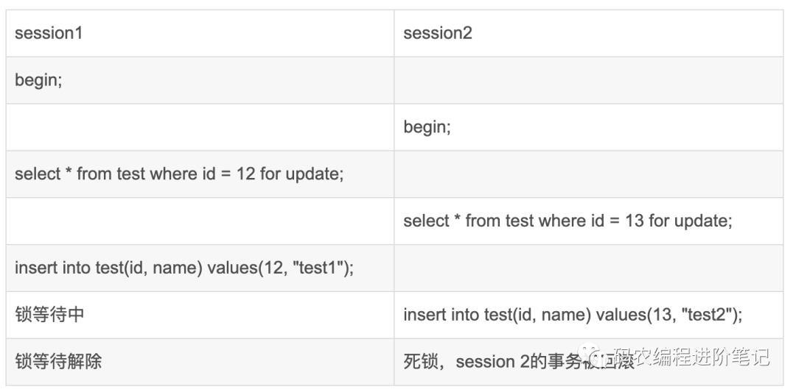
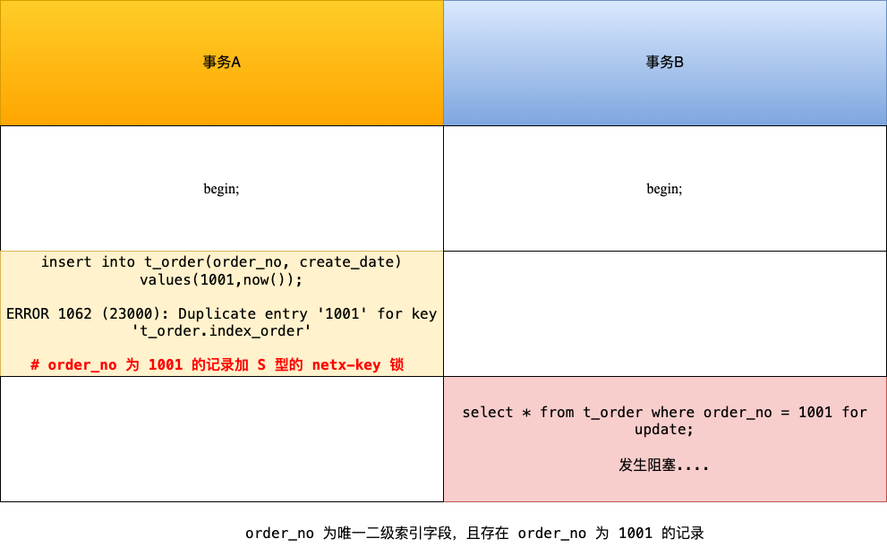

《MYSQL》备忘录
用于整理 MySQL 的相关知识，以备查询。
01 MySQL 概览
存储引擎：
- InnoDB：支持事务，支持行级锁，支持外键，采用 MVCC 支持高并发，支持四个隔离级别
- MyISAM：不支持事务，只支持表锁，支持压缩表和空间数据索引，数据恢复困难
索引数据结构：
- AVL 树：左右子树树高相差不超过 1 的平衡二叉树，插入和删除会引入旋转操作，适合查找多的场景
- 红黑树：确保没有一条路径会比其他路径长 2 倍，近似平衡，适合插入删除操作多的场景
- 跳表：平均性能和红黑树相当，但实现更为简单
- B 树：多路查找树，中间节点也会携带实际数据
- B+ 树：多路查找树，只有叶子节点才会携带实际数据，查询性能稳定
B+ 树和红黑树比较：
- B+ 树一个节点可以存储多个元素，相较于红黑树树高更低，磁盘 IO 次数小
- 磁盘预读功能对 B+ 树产生优化功能
B+ 树和 B 树比较：
- B+ 树磁盘 IO 更低，其内部节点全部是指针，没有实际数据，能够更快找到元素
- B+ 树查询效率更加稳定
- B+ 树遍历效率高
MySQL 索引：在存储层实现，不同的存储引擎具有不同的索引类型
- B+ 树索引：主索引通常是聚簇索引，辅助索引通常需要回表，覆盖索引，组合索引
- 哈希索引：只支持点查询，不支持范围查询，同时不支持排序和分组操作
- 全文索引：用于查找文本中的关键词，通常采用倒排索引实现
- 空间数据索引（R-Tree）：多维索引，可用于存储地理数据
索引优化：
- 独立的列：查询条件中，索引列不能是表达式的一部分
- 多列索引：比单列索引更好
- 索引列顺序：让选择性强的索引放在前面
- 前缀索引
- 覆盖索引：索引包含所有需要查询的字段的值，不需要进行回表操作
查询语句分析：使用 explain 进行分析，其结果参数
- select_type：常用的有 SIMPLE 简单查询，UNION 联合查询，SUBQUERY 子查询
- possible_keys：可选择的索引
- key：实际使用的索引
- rows：扫描的行数
- type：关联类型，决定通过什么方式找到每一行数据
- system：只有一条数据的系统表
- const：主键或者唯一索引查询
- eq_ref：在进行联接查询的，使用主键或者唯一索引并且只匹配到一行记录的时候
- ref：使用非唯一索引
- range：索引范围查询
- index：跟全表扫描类似，只是扫表是按照索引顺序进行
- all：全表扫描，不走索引
查询语句优化：
- 减少请求的数据量，只返回必要的行数据和列数据
- 减少服务器扫描的行数，尽量通过覆盖索引
- 重构查询语句：切分大查询，分解大连接查询，将连接任务交给上层
事务：
- 特性：ACID
- 隔离级别：未提交读，提交读，可重复读，可串行化，快照
- 非一致性问题：脏读，不可重复读，幻读，丢失更新
并发控制：
- 锁：共享锁，排他锁，意向共享锁，意向排他锁
- 锁粒度：
- Record Lock：锁定一个记录对应的索引，而不是本身
- Gap Lock：锁定索引之间的间隙，但是不包含索引本身
- Next-Key Lock：左开右闭区间，Gap Lock + Record Lock
- MVCC：在每个记录后面加上两个隐藏的列，记录创建版本号和删除版本号，通过 undo 日志串联版本
- 快照读：读取历史数据
- 当前读：读取数据库当前版本数据，可以通过加锁
lock in share mode，for update实现
分库分表数据切分：水平切分（Sharding）和垂直切分
水平切分：
- 策略：哈希取模，范围划分，映射表
- 问题：
- 事务问题：改为分布式事务，使用 XA 接口
- 连接：多个单表查询，在用户程序中连接
- 唯一性：使用全局唯一 GUID，分布式 ID 生成器
MySQL 集群：
- 主从复制：主要涉及三个线程，binlog 线程，IO 线程和 SQL 线程
- 读写分离：主服务器处理实时性要求高的读写操作，从服务器处理读操作，可以减轻主服务器的负载
关系数据库设计范式：
- 1NF：每个属性不可分割，可能存在数据冗余问题
- 2NF：消除非主属性对码的部分函数依赖
- 3NF：消除非主属性对于码的传递函数依赖，基本消除了各种异常
- BCNF：主属性不依赖于主属性
- 4NF：消除多值依赖
02 MySQL 索引
索引的优缺点：
- 优势：
- 可以提高数据检索的速度，降低 IO 成本
- 索引还能对数据进行排序，降低排序查询语句的执行时间
- 劣势：
- 索引本身会占用部分空间
- 索引虽然提高了查询效率，但是降低了数据更新的效率，因为更新数据的同时需要更新数据
索引类型：主键索引，普通索引（辅助索引），唯一索引，全文索引，空间索引，前缀索引，单列索引，联合索引，聚簇索引
索引的数据结构：
- Hash 表：单点查询性能好，但是不支持范围查询
- 平衡二叉树：查询性能良好，但是树高太大，IO 次数多
- B 树：改造二叉树，每个节点上有多个数据项，同时对应多个分支，中间节点上可以存储数据
- B+ 树：只有叶子节点上存在数据，中间节点只有索引和节点值，进一步降低查找时的 IO 开销
MyISAM 索引：索引和数据分开存储在不同的文件中，叶子节点记录的是磁盘地址
InnoDB 索引：叶子节点存储的数据是整行的数据，称之为聚簇索引，为此，普通索引需要进行回表操作
覆盖索引：在使用辅助索引的时候，需要经过回表操作才能拿到整行数据，可以创建组合索引避免回表
优化：
- 避免回表：使用覆盖索引
- 正确使用联合索引，遵循最左匹配原则
03 组合索引的特殊情况
假设存在表 t(a, b, c, d)，其中以 a 创建主键索引，以 (b, c, d) 创建组合索引，语句 select * from t where c = 0 执行过程中，有以下问题：
上述条件查询并不满足最左匹配原则，为什么查询的时候使用了索引？
答：联合索引中有查询需要所有数据项，可以使用覆盖索引，但是其并不满足最左匹配，因此 type 是 index，而不是 ref，同时，组合索引中叶子节点信息量更大，主索引通常还包括了版本信息，事务 id，回流指针等等，因此选择组合索引
为这个表增加 e 字段后，上述查询为什么变为全表扫描？
答：加入 e 字段后，就不能使用覆盖索引了，此时就只能进行全表扫描
04 慢 SQL 查询语句
SQL 语句执行流程：
- 连接器：服务器进行账户检查，权限检查等操作
- 缓存层
- 词法语法分析，检查 SQL 正确性
- 优化器找到最佳物理执行计划
- 调用存储引擎的相关接口进行查询，并返回结果
InnoDB 存储引擎：
- 磁盘预读机制：当引擎访问某个数据项的时候，通常其相邻的数据页也会被加载到内存
- 索引：InnoDB 主索引采用的是聚簇索引，如果没有唯一且非空的键则会隐式创建一个自增的列
慢 SQL 危害：在高并发情况下，慢 SQL 出现后会阻塞大量正常的请求，造成大面积的超时和失败
慢 SQL 原因：
- 索引创建方面：
- 索引区分度低
- 切忌过多创建索引，其会大幅降低更新操作的效率
- 常用查询，排序，分组字段建索引
- 主键和外键建索引
- 索引失效方面：
- 对索引使用函数
- 对索引进行运算
- 对索引使用 <> 、not in 、not exist、!=
- 对索引进行前导模糊查询
- 隐式转换会导致不走索引
- 非索引字段的 or 连接
- 非最左前缀
预防慢 SQL 方案：
- 使用连接代替子查询
- 使用覆盖索引
- 多表关联查询时，小表在前，大表在后
- 调整 where 子句中的连接顺序
- 使用联合索引，而非建立多个单独索引
慢 SQL 分析：打开慢 SQL 日志，设置慢 SQL 执行时间阈值，之后使用 explain 命令查看原因
05 分页场景
假设存在表 t_record(id, age, name)，id 上存在主索引，age 上存在辅助索引，下列语句
1 | select * from t_record where age > 10 offset 10000 limit 10; |
在第一次执行的时候很慢，在第二次有了缓存之后，才会变快。
对于 MySQL，上述语句会使用 age 上的索引，首先找到满足 age > 10 的第一个数据，然后向后遍历 10000 项数据，并且对每一项数据，都会进行回表操作，即使我们不需要这些数据。这样的话引入了大量的随机 IO，自然速度变慢。
分页性能问题优化：
产品上绕过，只提供上一页和下一页功能不需要回表，并且没有 offset
1
select * from t_record where id > last_id limit 10;
使用覆盖索引：不需要进行额外的回表操作
1
2select * from t_record where id in
(select id from t_record where age > 10 offset 10000 limit 10）;
06 MySQL 事务
事务特性：ACID
InnoDB 保证事务特性：
- 持久性是通过 redo log （重做日志）来保证的
- 原子性是通过 undo log（回滚日志） 来保证的
- 隔离性是通过 MVCC（多版本并发控制） 和锁机制来保证的
并行事务引发的问题：丢失更新，脏读，不可重复读，幻读
事务隔离性级别：未提交读，提交读，可重复读，串行化，快照隔离
InnoDB 保证事务隔离级别：
- 未提交读：直接读取最新的数据
- 串行化：加读写锁实现
- 读提交和可重复读：通过 Read View 实现，读提交在每次读数据前生成一个 Read View，可重复读则在启动事务时生成一个 Read View，在之后都使用该 Read View
MVCC 实现：在每个记录后面还增加了两个隐藏列，trx_id 和 roll_pointer，后者指向旧版本记录
Read View 数据结构：

可重复读：遍历记录版本，直到找到 trx_id 小于等于 creator_trx_id 的记录
读提交：遍历记录版本，直到找到 trx_id 小于 max_trx_id，并且其不在 m_ids 列表中的记录
07 幻读的处理
在可重复读隔离级别下，普通的查询语句是快照读，其是不会看到别的事务新的插入的数据的，幻读的现象只能在当前读下产生。
InnoDB 为了防止该问题，采用了 next-key 锁，下面的事务 A 会锁住 (2, +inf) 范围的记录，如果该期间有其他事务在这个锁住的范围插入数据就会被阻塞，从而解决了幻读现象。

next-key 锁锁的是索引，而不是数据本身，如果 update 语句的 where 条件没有使用索引列，那么就会全表扫描，不仅加上行锁，还加上了间隙锁，相当于锁住整个表，直到事务结束时释放。因此，在线上千万不要执行没有带索引条件的 update 语句，不然会造成业务停滞。
InnoDB 默认隔离级别是可重复读，但是很大程度上避免了幻读现象（并不是完全解决了）：
- 针对快照读，通过 MVCC 方式解决
- 针对当前读，通过 next-key 锁（记录锁 + 间隙锁）方式解决
在 RR 隔离级别下，幻读被彻底解决了吗？
没有，只是很大程度上避免了幻读，但是没有完全解决幻读，如

08 MySQL 锁类型
全局锁：
- 使用方法：
flush tables with read lock和unlock tables加锁和解锁，加锁后整个数据库就只处于只读状态，会阻塞其他线程对表的结构和数据的更改 - 应用场景：全库逻辑备份，通常在不支持 MVCC 的引擎中使用，而对于像 InnoDB 引擎，可以在 mysqldump 时加上
-single-transaction就能保证数据一致性 - 缺点：整个数据库只读状态，可能会造成业务停滞
表级锁：
表锁：
lock tables t_name read/write，其会限制本线程和其他线程的读写操作，可以通过unlock tables或者退出会话释放表锁元数据锁（MDL）：不需要显式使用 MDL，其根据如下规则加锁：
- 对一张表进行 CRUD 操作时，加的是 MDL 读锁
- 对一张表做结构变更操作的时候，加的是 MDL 写锁
MDL 在事务提交后才会释放，另外，MDL 写锁获取的优先级高于读锁，一旦出现 MDL 写锁等待，会阻塞后续该表的所有 CRUD 操作
意向锁：加锁规则如下：
- 在对某些记录加上共享锁之前，需要先在表级别加上一个意向共享锁
- 在对某些纪录加上独占锁之前，需要先在表级别加上一个意向独占锁
注意，普通的 select 是不会加锁的，因为其是利用 MVCC 实现，可以通过
lock in share mode或者select ... for update实现，意向共享锁和意向独占锁是表级锁，不会和行级的共享锁和独占锁发生冲突，而且意向锁之间也不会发生冲突，只会和共享表锁和独占表锁发生冲突，意向锁的目的是快速判断表里是否有记录被加锁AUTO-INC 锁：该锁在执行完插入语句后就会释放，而不是提交事务时释放。由于其是表级锁，会影响并发插入的性能，因此，MySQL 5.2 后的版本提供了轻量级的锁，其在申请完自增主键后就立即释放锁资源，这样在并发插入的时候，不能保证自增长的值是连续的，这在主从赋值的场景中是不安全的。可以通过设置 binlog_format = row 保证一致性
行级锁：InnoDB 才有，MyISAM 并没有行锁
记录锁：锁住一条记录，作用在索引上，存在 S 锁和 X 锁之分
间隙锁：锁定一个范围，间隙锁是兼容的，两个不同的事务可以持有公共的间隙锁，间隙锁本质上用于阻止其他事务在该间隙内插入新记录，而自身事务允许在该间隙内插入数据
Next-Key Lock：记录锁和间隙锁的组合，用左开右闭区间表示，是加锁的基本单位，但是可能会退化，普通的 select 语句是快照读，只有
select .. in share mode和select ... for update才会加锁插入意向锁：特殊的间隙锁，不同于间隙锁的是，该锁只用于插入操作，一个事务拥有插入意向锁，另外一个事务便不能拥有对应的间隙锁

09 MySQL 加锁规则
next-key 锁退化原则：在能使用记录锁或者间隙锁就能避免幻读现象的场景下， next-key lock 就会退化成记录锁或间隙锁
唯一索引等值查询：
- 查询的记录存在：退化成记录锁
- 查询的记录不存在：退化成间隙锁
唯一索引范围查询（包含）：首先找到 min 对应的 next-key lock，如果 min 存在，退化成记录锁；最后找到 max 对应的 next-key lock，如果 max 不存在，退化成间隙锁
非唯一索引等值查询：对非唯一索引加锁时，其会同时对主键索引加记录锁
- 查询的记录存在：先加 next-key lock， 另外一把锁退化成间隙锁
- 查询的记录不存在：退化成间隙锁
非唯一索引范围查询：next-key lock 不会退化
没有加索引的查询：将会使用全表扫描的方式，此时整个索引上都会加上 next-key 锁，相当于锁住全表，因此，在线上在执行 update、delete、select … for update 等具有加锁性质的语句，一定要检查语句是否走了索引
分析加锁的命令：select * from performance_schema.data_locks\G
- LOCK_TYPE：TABLE，RECORD（行级锁）
- LOCK_MODE：
- X：next_key 锁
- X，REC_NOT_GAP：记录锁
- X，GAP：间隙锁
10 update 语句
当执行 update 语句的时候，如果没有带上索引，可能会走全表扫描，从而导致全表加上了独占锁，导致业务停滞，通常可以使用以下方法避免该情况：
- 开启安全更新模式，
sql_safe_update参数设置为 1，此时需要 update 有 where 或者 limit 子句 - 如果带上索引，但是优化器选择走全表扫描，可以使用 force index 语句
11 MySQL 索引失效
索引失效的情况：
- 对索引使用左或者左右模糊匹配
- 对索引使用函数：MySQL 8.0 以后可以使用函数索引
- 对索引进行表达式计算
- 对索引隐式类型转换：在遇到字符串和数字比较的时候，会先把字符串转为数字，然后再进行比较
- 联合索引非最左匹配：(a, b, c) 组合索引，
where a = 6 and c = 8，MySQL 5.6 之前版本会回表比较，而之后的版本使用索引下推优化 - WHERE 子句中的 OR
12 count 性能
count 性能：count(*) = count(1) > count(主键字段) > count(字段)
count 作用：统计符合查询条件的记录中，函数指定的参数不为 NULL 的记录有多少个
count(主键字段)：优先走二级索引，没有的话走主键索引，InnoDB 只会返回对应的主键字段
count(1)：和 count(主键字段) 类似，但是不会读取记录中的任何字段的值
count(*)：会被优化为 count(0)，执行效率和 count(1) 相同
count(字段)：会走全表扫描，如果其 NOT NULL，那么 Server 层就不需要额外的判断
走聚簇索引和全表扫描的区别：全表扫描还需要额外访问叶子节点的非主键字段，效率更低
MyISAM 引擎和 InnoDB 引擎：执行 count(*) 时，其直接返回表的元信息中 row_count 值，但是由于 InnoDB 支持 MVCC，并不能简单统计当前的行数作为业务的返回值，但当带上条件查询时，两者行为类似
如何优化 count(*)：
- 使用近似值：如 explain
- 额外表保存计数值
13 MySQL 死锁避免
Insert 语句在正常执行的时候不会生成锁结构的，只有在以下情况才会将隐式锁转换为显式锁：
- 如果记录之间加有间隙锁，为了避免幻读，此时是不能插入记录的
- 如果 Insert 的记录和已有记录存在唯一键冲突，此时也不能插入记录
在事务未提交前，将会一直保持有对应的共享的记录锁，对于唯一二级索引，下图会造成阻塞：
多个客户端同时对资源加锁，就可能存在死锁现象，MySQL 中死锁避免方法有：
- 设置事务等待锁的超时时间：innodb_lock_wait_timeout
- 开启主动死锁检测：innodb_deadlock_detect
14 MySQL 优化思路
MySQL 逻辑架构：
- 客户端层：用于连接处理，授权认证，安全检测等
- 核心服务层：查询解析，分析，优化，缓存，跨存储引擎的功能在该层实现，如存储过程，触发器
- 存储引擎：负责 MySQL 中的数据存储和提取
查询语句执行过程：
- 客户端发送查询请求
- 检查缓存是否命中，命中直接返回，否则继续执行，可以设置
query_cache_type为 DEAMND - 解析、预处理、再由优化器生成对应的执行计划
- 根据执行计划，调用存储引擎的 API 来执行查询
- 将结果返回给客户端，该过程是一个增量且逐步返回的过程
性能优化：
- Schema 设计和数据类型优化：通常越小的数据类型越快，占用更小的磁盘
- 对整数类型指定宽度，没有任何作用
- 大多数情况下不使用枚举类型，因为添加和删除字符串必须使用
alter table - schema 的列不要太多
- 索引：
- 注意索引失效的情况
- 前缀索引：如果列字符串很长，可以使用前缀索引
- 避免多个范围条件查询
- 覆盖索引
- 使用索引来排序
- 删除长期未使用的索引
- 特定类型优化：
- 优化 count 查询：直接使用 count(*)，如果不需要精确值，可以使用 explain
- 优化关联查询：可以使用子查询的方式来让优化器选择索引
- 优化 LIMIT 分页：使用覆盖索引，或者统计书签信息
- 优化 UNION：尽量使用 UNION ALL，否则的话需要做唯一性检查，该过程很耗时
15 Buffer Pool
InnoDB 存储引擎提供了 buffer pool，用来提高数据库的读写性能
- 粒度：其以页（16 KB）为单位，通过参数
innodb_buffer_pool_size调整缓存空间大小 - 缓存信息：数据页，索引页，undo 页，插入缓存页，锁信息等（不包括 redo log buffer）
InnoDB 通过三种链表管理缓存页：
- Free List：管理空闲页
- Flush List：管理脏页
- LRU List：管理脏页和干净页，在内存不足时用于淘汰
InnoDB 中的 LRU 优化：
预读失效：分为 young 区域和 old 区域，加入缓冲区的页首先被放在 old 区域，只有后续真正被访问才会真正放入 young 区域
缓存污染：为进入到 young 区域的页增加了一个停留在 old 区域时间的判断，只有后续访问与第一次访问时间大于某个时间间隔，才会将其移动到 young 区域的头部

脏页刷盘时机：
- redo log 日志满了，主动触发
- Buffer pool 空间不足，逐出脏页，需要刷盘
- MySQL 认为空闲时，后向线程定期将适量的脏页刷盘
- MySQL 正常关闭之前，所有脏页都需要刷盘
16 MySQL 日志系统
在执行一条更新语句的时候，会涉及到如下三种日志：
- undo log：InnoDB 存储引擎生成的日志，实现了事务的原子性，用于事务回滚和支持 MVCC
- redo log：InnoDB 存储引擎生成的日志，实现了事务的持久性，主要用故意掉电等故障恢复
- binlog：Server 层生成的日志，主要用于数据备份和主从复制
redo log 相关问题：
redo log 产生动机？
Buffer Pool 为上层应用提供了缓存的功能，脏页并不会立即写到磁盘上，为了防止掉电产生数据不一致的情形，需要先使用 redo log 记录下事务的操作，然后操作内存数据，最后在合适时间点将脏页数据刷到磁盘上，这样就能保证 crash-safe
修改 undo 页面，需要记录对应的 redo log 吗？
需要，需要首先记录修改 undo 页面的 redo log，再真正修改 undo 页面
redo log 同样需要写到磁盘，数据也要写到磁盘，为什么多此一举？
redo log 采用的是追加写，磁盘操作是顺序写，而写入数据则需要先找到写入位置，对应磁盘操作是随机写，其将 MySQL 的写操作从磁盘的随机写变为顺序写，提高了系统性能
产生的 redo log 是直接写入磁盘吗？
不是的，首先将操作记录到 redo log buffer 中，后续根据刷盘策略再将其写入到磁盘中
redo log 什么时候刷盘？
主要有下面几个时机：
- MySQL 正常关闭时
- 当 redo log buffer 中记录的写入量大于 redo log buffer 内存空间的一半时，会触发落盘
- InnoDB 的后台线程每隔 1 秒，将 redo log buffer 持久化到磁盘
- 每次事务提交时都将缓存在 redo log buffer 里的 redo log 直接持久化到磁盘（ innodb_flush_log_at_trx_commit = 1）
innodb_flush_log_at_trx_commit 参数控制什么？
- 当设置该参数为 0 时，表示每次事务提交时 ，还是将 redo log 留在 redo log buffer 中 ，该模式下在事务提交时不会主动触发写入磁盘的操作，此时 MySQL 进程崩溃将损失上一秒内的事务数据
- 当设置该参数为 1 时，表示每次事务提交时，都将缓存在 redo log buffer 里的 redo log 直接持久化到磁盘，这样可以保证 MySQL 异常重启之后数据不会丢失
- 当设置该参数为 2 时，表示每次事务提交时，都只是缓存在 redo log buffer 里的 redo log 写到 redo log 文件，注意写入到「 redo log 文件」并不意味着写入到了磁盘，因为操作系统的文件系统中有个 Page Cache，Page Cache 是专门用来缓存文件数据的，所以写入「 redo log文件」意味着写入到了操作系统的文件缓存，此时 MySQL 进程崩溃不一定会丢失数据，因为操作系统会在合适时机调用 fsync 进行数据落盘
redo log 文件写满了怎么办？
InnoDB 存储引擎有一个重做日志文件组，包含两个文件：
ib_logfile0和ib_logfile1。采用循环写的方式，check_point 表示当前要擦除的位置，write_pos 表示下一个 redo log 日志要写入的位置，当 redo log 文件写满了，也就是 write_pos 追上了 check_point，此时 MySQL 不能执行新的更新操作，其会停下来将 buffer pool 中的脏页刷新到磁盘中，以将 check_point 向后推进，使得 MySQL 恢复正常执行
binglog 相关问题：
为什么有了 binlog， 还要有 redo log？
最初的 MySQL 使用的是 MyISAM 引擎，其只有 binlog，用于归档，InnoDB 以插件形式引入，引入 redo log 是为了 crash-safe 能力
redo log 和 binlog 有什么区别？
- 适用对象不同，redo log 只适用于 InnoDB 引擎，而 binlog 所有引擎适用
- 文件格式不同
- binlog：STATEMENT，ROW，MIXED
- redo log：物理日志，记录的是某个数据页做了什么修改
- 写入方式不同：redo log 采用循环写，binlog 采用追加写
- 用途不同：binlog 用于备份恢复，主从复制，redo log 用于掉电等故障恢复
主从复制如何实现？
MySQL 集群的主从复制过程梳理成 3 个阶段：
- 写入 Binlog：主库写 binlog 日志，提交事务，并更新本地存储数据
- 同步 Binlog：把 binlog 复制到所有从库上，每个从库把 binlog 写到暂存日志（relay log）中
- 回放 Binlog：回放 binlog，并更新存储引擎中的数据
MySQL 主从复制还有哪些模型？
- 同步复制：MySQL 主库提交事务的线程要等待所有从库的复制成功响应，才返回客户端结果。这种方式在实际项目中，基本上没法用，原因有两个：一是性能很差，因为要复制到所有节点才返回响应；二是可用性也很差，主库和所有从库任何一个数据库出问题，都会影响业务。
- 异步复制（默认模型）：MySQL 主库提交事务的线程并不会等待 binlog 同步到各从库，就返回客户端结果。这种模式一旦主库宕机，数据就会发生丢失。
- 半同步复制：MySQL 5.7 版本之后增加的一种复制方式，介于两者之间，事务线程不用等待所有的从库复制成功响应，只要一部分复制成功响应回来就行，比如一主二从的集群，只要数据成功复制到任意一个从库上，主库的事务线程就可以返回给客户端。这种半同步复制的方式，兼顾了异步复制和同步复制的优点，即使出现主库宕机，至少还有一个从库有最新的数据，不存在数据丢失的风险。
什么时候 binlog cache 会写到 binlog 文件？
在事务提交的时候，执行器把 binlog cache 里的完整事务写入到 binlog 文件中，并清空 binlog cache。同样地，MySQL 提供一个 sync_binlog 参数来控制数据库的 binlog 刷到磁盘上的频率：
- sync_binlog = 0 的时候，表示每次提交事务都只 write，不 fsync，后续交由操作系统决定何时将数据持久化到磁盘；
- sync_binlog = 1 的时候，表示每次提交事务都会 write，然后马上执行 fsync；
- sync_binlog =N(N>1) 的时候，表示每次提交事务都 write，但累积 N 个事务后才 fsync
两阶段提交问题：
为什么需要两阶段提交？
事务提交后，redo log 和 bin log 都需要持久化到磁盘，但是可能出现半成功的状态，对于命令
UPDATE t_user SET name = 'xiaolin' WHERE id = 1：- 如果在将 redo log 刷入到磁盘之后， MySQL 突然宕机了，而 binlog 还没有来得及写入。MySQL 重启后，通过 redo log 能将 Buffer Pool 中 id = 1 这行数据的 name 字段恢复到新值 xiaolin，但是 binlog 里面没有记录这条更新语句，在主从架构中，binlog 会被复制到从库，由于 binlog 丢失了这条更新语句，从库的这一行 name 字段是旧值 jay，与主库的值不一致性；
- 如果在将 binlog 刷入到磁盘之后， MySQL 突然宕机了，而 redo log 还没有来得及写入。由于 redo log 还没写，崩溃恢复以后这个事务无效，所以 id = 1 这行数据的 name 字段还是旧值 jay，而 binlog 里面记录了这条更新语句，在主从架构中，binlog 会被复制到从库，从库执行了这条更新语句，那么这一行 name 字段是新值 xiaolin，与主库的值不一致性；
两阶段提交是为了避免出现两份日志之间的逻辑不一致的问题。
两阶段提交的过程是怎样的？
MySQL 使用内部 XA 事务完成两阶段提交，将 redo log 写入拆分成两个步骤：prepare 和 commit，中间再穿插写入 binlog，具体如下：
- prepare 阶段：将 XID（内部 XA 事务的 ID） 写入到 redo log，同时将 redo log 对应的事务状态设置为 prepare，然后将 redo log 刷新到硬盘；
- commit 阶段：把 XID 写入到 binlog，然后将 binlog 刷新到磁盘，接着调用引擎的提交事务接口，将 redo log 状态设置为 commit，同样需要写入到磁盘；
异常重启会出现什么现象？

在 MySQL 重启后会按顺序扫描 redo log 文件，碰到处于 prepare 状态的 redo log，就拿着 redo log 中的 XID 去 binlog 查看是否存在此 XID：
- 如果 binlog 中没有当前内部 XA 事务的 XID，说明 redolog 完成刷盘，但是 binlog 还没有刷盘，则回滚事务。对应时刻 A 崩溃恢复的情况。
- 如果 binlog 中有当前内部 XA 事务的 XID，说明 redolog 和 binlog 都已经完成了刷盘，则提交事务。对应时刻 B 崩溃恢复的情况。可以保证主库和备库的一致性。
可以看到，对于处于 prepare 阶段的 redo log，即可以提交事务，也可以回滚事务，这取决于是否能在 binlog 中查找到与 redo log 相同的 XID，如果有就提交事务，如果没有就回滚事务。
事务没提交的时候，redo log 会被持久化到磁盘吗？
会的，MySQL 后台线程会每隔一秒将 redo log buffer 持久化到磁盘，因此，redo log 可以在事务没提交之前持久化到磁盘，但是 binlog 必须在事务提交之后，才可以持久化到磁盘。
两阶段提交的问题？
- 磁盘 IO 次数高：对于“双1”配置，每个事务提交都会进行两次 fsync（刷盘），一次是 redo log 刷盘，另一次是 binlog 刷盘。
- 锁竞争激烈：两阶段提交虽然能够保证「单事务」两个日志的内容一致，但在「多事务」的情况下，却不能保证两者的提交顺序一致，因此，在两阶段提交的流程基础上，还需要加一个锁（prepare_commit_mutex）来保证提交的原子性，从而保证多事务的情况下，两个日志的提交顺序一致。
binlog 组提交实现方式？
MySQL 引入了 binlog 组提交（group commit）机制，当有多个事务提交的时候，会将多个 binlog 刷盘操作合并成一个，从而减少磁盘 I/O 的次数。引入了组提交机制后，prepare 阶段不变，只针对 commit 阶段，将 commit 阶段拆分为三个过程：
- flush 阶段：多个事务按进入的顺序将 binlog 从 cache 写入文件（不刷盘）；
- sync 阶段：对 binlog 文件做 fsync 操作（多个事务的 binlog 合并一次刷盘）；
- commit 阶段：各个事务按顺序做 InnoDB commit 操作，将 redo log 状态设置为 commit
上面的每个阶段都有一个队列，每个阶段有锁进行保护，锁粒度减小，这样就使得多个阶段可以并发执行，从而提升效率。
有 binlog 组提交，那有 redo log 组提交吗？
MySQL 5.6 没有 redo log 组提交，MySQL 5.7 有 redo log 组提交。
在 MySQL 5.6 的组提交逻辑中，每个事务各自执行 prepare 阶段，也就是各自将 redo log 刷盘，这样就没办法对 redo log 进行组提交。
所以在 MySQL 5.7 版本中，做了个改进，在 prepare 阶段不再让事务各自执行 redo log 刷盘操作，而是推迟到组提交的 flush 阶段，也就是说 prepare 阶段融合在了 flush 阶段。

组提交相关参数？
- Binlog_group_commit_sync_delay：控制 flush 阶段后 sync 阶段前的等待时间
- Binlog_group_commit_sync_no_delay_count：最大组提交中事务的数目
MySQL 磁盘 IO 很高，优化方法有哪些？
- 设置组提交的两个参数：binlog_group_commit_sync_delay 和 binlog_group_commit_sync_no_delay_count 参数，延迟 binlog 刷盘的时机，从而减少 binlog 的刷盘次数
- 将 sync_binlog 设置为大于 1 的值
- 将 innodb_flush_log_at_trx_commit 设置为 2
17 MySQL 行记录存储结构
MySQL 数据文件：在 InnoDB 引擎中，按照数据库名称创建对应的目录，然后在对应目录下面存储对应的表数据，如，对于 my_test 数据库，在 /var/lib/mysql/my_test 目录下，存在以下文件：
- db.opt：存储当前数据库的默认字符集和字符校验规则
- t_order.frm：t_order 的表结构会保存在这个文件
- t_order.ibd：t_order 的表数据会保存在这个文件
表空间的文件结构：
- 行（row）：数据库表中的记录都是按行进行存放的
- 页（page）：记录是按照行来存储的，但是 InnoDB 引擎读写是按照页为单位的
- 区（extent）：在表中数据量大的时候，为某个索引分配空间的时候就不再按照页为单位分配了，而是按照区为单位分配，可以保证链表中相邻的页物理位置上也相邻
- 段（segment）：一般分为数据段、索引段和回滚段
InnoDB 行格式：Redundant，Compact，Dynamic 和 Compressed
- Redundant：基本不再使用
- Compact：紧凑的行格式
- Dynamic 和 Compressed 两个都是紧凑的行格式，它们的行格式都和 Compact 差不多，因为都是基于 Compact 改进一点东西
Compact 格式：

- 记录的额外信息：
- 变长字段长度列表：用于记录各个变长字段的实际长度，每个长度值 1 到 2 字节
- NULL 值列表：记录各个可为 NULL 列的值是否是 NULL，每列使用 1 bit 即可
- 记录头信息：delete_mask，next_record，record_type
- 记录的真实数据
- row_id：只有在没有声明主键和唯一约束列，才会存在该列
- trx_id：标记哪个事务生成的
- roll_pointer：记录上个版本的指针，指向的是额外信息和真实数据之间位置
如何处理溢出：MySQL 支持像 TEXT 和 BLOB 数据，这些数据可能单个数据页放不下，因此需要提供溢出页，用来存储额外数据。Compact 格式的行数据是在真实数据处存放部分数据，再通过溢出页指针找到剩余数据，而 Compressed 和 Dynamic 则直接采用溢出指针的方式存储数据，这样，原来的数据页就能存放更多的行数据了
相关问题：
MySQL 的 NULL 值是怎么存放的？
通过 NULL 值列表进行标记，其长度根据可为 NULL 列数目变化
MySQL 怎么知道 varchar(n) 实际占用数据的大小？
通过变长字段长度列表存储实际占用大小
varchar(n) 中 n 最大取值为多少？
MySQL 规定除了 TEXT、BLOBs 这种大对象类型之外，其他所有的列（不包括隐藏列和记录头信息）占用的字节长度加起来不能超过 65535 个字节。如果表只有一个 varchar(n) 字段，允许为 NULL，字符集是 ascii，那么最大值是 65535 - 2 - 1 = 65532；如果有多个字段的话，要保证所有字段的长度 + 变长字段字节数列表所占用的字节数 + NULL值列表所占用的字节数 <= 65535。注意 n 表示字符数目，而不是字节数目，因此对于 UTF8 格式，n 还需要减少
18 LRU 算法优化
传统的 LRU 算法存在以下问题：
- 预读失效：预先读取下一页数据，但是并没有真正使用，导致热数据被逐出
- 缓存污染：使用了顺序扫描，这些页数据只会被读取一次，导致之前的热数据被逐出
MySQL 优化：InnoDB 提供的 buffer pool，缓存数据页
- 预读失效：划分为 young 区域和 old 区域，预读数据被放在 old 区域上
- 缓存污染：在内存页被访问第二次的时候，还需满足停留在 old 区域中的时间大于 1s
Linux 优化：再读磁盘时也存在预读机制，将接下来的块读取到 page cache 中
- 预读失效：实现两个 LRU 链表，即活跃 LRU 链表和非活跃 LRU 链表
- 缓存污染：在内存页被访问第二次的时候，才将其升级到活跃 LRU 链表中
MySQL 面试题
能说下 MyISAM 和 InnoDB 的区别吗？
MyISAM 支持全文索引，压缩表和空间函数等，但是不支持事务和行级锁，通常用于大量查询少量插入的场景，MyISAM 的索引和数据是分开的；InnoDB 采用聚簇索引，其支持事务，外键和行级锁，并且通过 MVCC 来支持高并发。
使用 VARCHAR(5) 和 VARCHAR(200) 存储 “hello” 的空间开销是一样的。那么使用更短的列有什么优势吗？
事实证明有很大的优势。更长的列会消耗更多的内存，因为 MySQL 通常会分配固定大小的内存块来保存内部值。尤其是使用内存临时表进行排序或其他操作时会特别糟糕。在利用磁盘临时表进行排序时也同样糟糕。
说下 MySQL 的索引有哪些吧，聚簇和非聚簇索引又是什么？
索引按照数据结构来说主要分为 B+Tree 和哈希索引，聚簇索引是索引和数据存放在一起。
主键索引自增有什么优点？
在插入数据的时候，可以直接将数据追加到最后一个数据页里面，不涉及数据在数据页中的移动，如果不使用自增主键，在插入的时候可能会造成页分裂等耗时操作。
空闲连接的查看和解决方式？
通过
show processlist查看空闲连接，MySQL 规定了空闲连接的默认最大时长（8 小时），用户也可主动在执行kill connection +<id>来终结空闲连接。那你知道什么是覆盖索引和回表吗？
覆盖索引指的是通过索引就可以取到所需的数据，如果所需数据不能通过覆盖索引，就需要访问聚簇索引获取相应的数据，该行为称为回表。
锁的类型有哪些呢？
从粒度上，分为全局锁，表级锁，行锁；从加锁方式上，分为乐观锁和悲观锁；从是否共享，分为共享锁和排他锁。
你能说下事务的基本特性和隔离级别吗？
ACID，四种隔离级别分别消除了四种不一致现象。
那ACID靠什么保证的呢？
原子性通过 undolog 保证，隔离性通过 MVCC 和锁机制实现，持久性通过 redolog 实现，保证了事务的持久性、原子性、隔离性之后，一致性才能得到保障。
那你说说什么是幻读，什么是MVCC？
幻读是指两次读取中读到了新插入的数据行，MVCC 实际上是为每个版本添加创建时间版本号，过期时间版本号，只有满足一定要求的事务才能读到对应的版本。
那你知道什么是 next-key lock 吗？
next-key lock 是 RR 下才有的锁，结合 MVCC 可以解决幻读的问题，其在一定条件下能够退化成记录锁或间隙锁。
MySQL 记录锁+间隙锁可以防止删除操作而导致的幻读吗？
可以，在 MySQL 的可重复读隔离级别下，针对「当前读」的查询语句会对索引加记录锁+间隙锁，这样可以避免其他事务执行「增、删、改」时导致幻读的现象。
分析以下问题：
- Q1: select * from t_table where a > 1 and b = 2，联合索引（a, b）哪一个字段用到了联合索引的 B+Tree？
- Q2：select * from t_table where a >= 1 and b = 2，联合索引（a, b）哪一个字段用到了联合索引的 B+Tree？
- Q3：SELECT * FROM t_table WHERE a BETWEEN 2 AND 8 AND b = 2，联合索引（a, b）哪一个字段用到了联合索引的 B+Tree？
- Q4：SELECT * FROM t_user WHERE name like ‘j%’ and age = 22，联合索引（name, age）哪一个字段用到了联合索引的 B+Tree？
答案：
- Q1 只有 a 字段用到了联合索引进行索引查询，而 b 字段并没有使用到联合索引。
- Q2 语句 a 和 b 字段都用到了联合索引进行索引查询（a = 1 时使用 b 字段索引）。
- Q3 语句 a 和 b 字段都用到了联合索引进行索引查询（a = 2 或 a = 8 时使用 b 字段索引）。
- Q4 语句 a 和 b 字段都用到了联合索引进行索引查询（对 name = j 的数据，此时使用 age）。
为什么说 MySQL 单表最好不要超过 2000 万？
MySQL 数据页大小大约是 16KB，分为索引页和数据页，索引页大约有 1000 数目，数据页假设有 16 条数据，对应的三层 B+ 树就是 1000 * 1000 * 16 = 1600 万，因此 MySQL 数据超过 2000 万可能会造成 B+ 树层数增加，而导致 IO 开销增大。
你们数据量级多大？分库分表怎么做的？
一般拆分顺序是先垂直后水平，水平分库一般通过哈希取模实现，为提高性能，可以引入一致性哈希。
那分表后的自增 ID 怎么保证唯一性的呢？
设定不同步长，分布式 ID 如雪花算法，不使用自增主键而是使用其他唯一数据列作为主键。
分表后非 sharding_key 的查询怎么处理呢？
对实时性要求不高的话，可以建立宽表；数据量不是很大的话，可以多线程扫表，然后再聚合结果。
说说 mysql 主从同步怎么做的吧？
主服务器写入 binglog 后，会创建 dump 线程推送其到从服务器，从服务器启动 IO 线程读取推送过来的 binglog，记录到 relay log 中继日志中，从服务器开启一个 sql 线程读取 relay log 并且执行，最后从服务器也记录自己的 binlog。主从同步分为全同步复制和半同步复制，前者需要所有从库执行完才返回客户端，后者至少收到一个从库的 ack 即可。
那主从的延迟怎么解决呢？
并不能解决，但是能尽量优化，如尽量减少或者不使用长事务。
查询缓存的作用？
查询的时候先查询缓存，但是在 MySQL 8.0 后，该功能被移除。缓存虽然能够提升数据库的查询性能，但是缓存同时也带来了额外的开销，每次查询后都要做一次缓存操作，失效后还要销毁。建议设置query_cache_type 变量为 DEMAND。